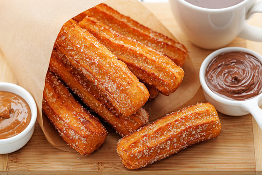

How to Make Churros
Ingredients:
- Water:This recipe for churros starts with a cup of water.
- Sugar:White sugar goes into the churro dough and into the cinnamon-sugar topping.
- Salt: A pinch of salt enhances the flavors of the other ingredients.
- Oil:You'll need vegetable oil for the dough and to fry the churros.
- Flour:All-purpose flour gives the churro dough structure.
- Cinnamon:The fried churros are rolled in a cinnamon-sugar mixture before serving.
Instructions:
- Boil water, sugar, salt, and vegetable oil. Remove from the heat, then stir in flour.
- Transfer the dough to a pastry bag and pipe into strips.
- Fry the strips in hot oil until they're golden.
- Drain the churros, then roll in cinnamon-sugar.
